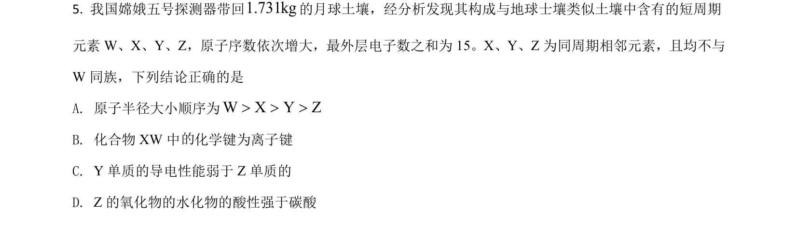
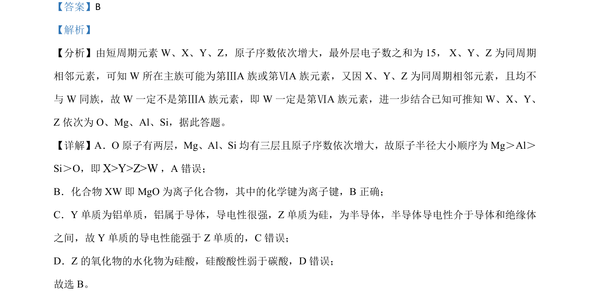

考点：元素推断 原子半径比较 离子键与共价键 导电性 酸性比较

推断短周期元素种类并比较原子半径、化学键类型、导电性及酸碱性。

📄 原 PDF 第 4 页：
素材/真题/吉林/2008-2024·（吉林）化学高考真题/2021年高考化学试卷（全国乙卷）（解析卷）.pdf
【答案】B 【解析】 【分析】由短周期元素 W、X、Y、Z，原子序数依次增大，最外层电子数之和为 15， X、Y、Z 为同周期 相邻元素，可知 W 所在主族可能为第ⅢA 族或第ⅥA 族元素，又因 X、Y、Z 为同周期相邻元素，且均不 与 W同族，故 W一定不是第ⅢA 族元素，即 W一定是第ⅥA 族元素，进一步结合已知可推知 W、X、Y、 Z依次为 O、Mg、Al、Si，据此答题。 【详解】A．O 原子有两层，Mg、Al、Si 均有三层且原子序数依次增大，故原子半径大小顺序为 Mg＞Al＞ Si＞O，即X>Y>Z>W，A 错误； B．化合物 XW 即 MgO 为离子化合物，其中的化学键为离子键，B正确； C．Y 单质为铝单质，铝属于导体，导电性很强，Z单质为硅，为半导体，半导体导电性介于导体和绝缘体 之间，故 Y 单质的导电性能强于 Z单质的，C错误； D．Z的氧化物的水化物为硅酸，硅酸酸性弱于碳酸，D 错误； 故选 B。